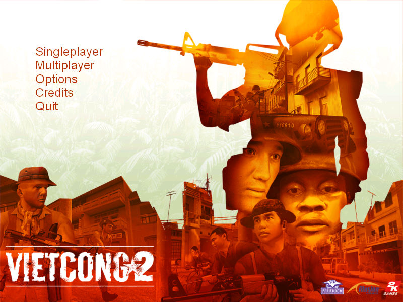
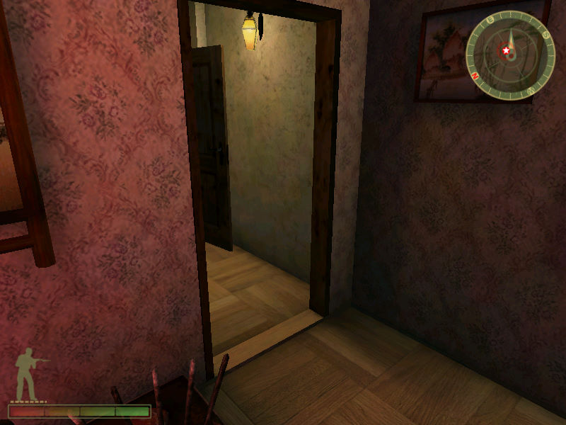

名稱：叢林之狐2／越戰2 (Vietcong 2，英文版)
簡介：Pterodon與Illusion Softworks 2003年開發的第一人稱戰術射擊遊戲，由2K代理發行
[待補]。


保護：光碟SecuROM 7.12+序號（NA11-AMB8-751R-4DR8-US7R）
備註：VirtualBox玩時若無滑鼠顯示，可改用視窗模式玩。
檔案：Vietcong2_v1_10.rar = 1.10更新檔
nocd10.rar = 1.0免光碟檔
nocd11.rar = 1.1免光碟檔